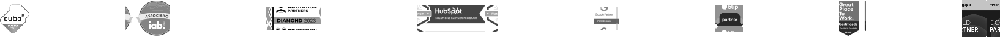

Agora, a 8D Pro e Hubify se unem em uma única, forte e inovadora agência.
Aplicamos uma jornada completa de Revenue Operations (RevOps), alinhando marketing, vendas e pós vendas para otimizar resultados Construímos uma estrutura integrada de dados e KPIs.
- Para quem entregamos? (O público) Para pessoas que reconheçam a força do mundo digital e nos enxergem como parceiros na evolução de seu negócio e, através dos dados contextualizados, percebam o valor do nosso trabalho
- O que entregamos? (O resultado) Uma jornada completa que, através da otimização de marketing e vendas, gera resultados eficazes para a sustentabilidade do negócio.
- Como cumprimos nosso propósito? (O processo) A quatro mãos, trabalhamos com metodologias que unem marketing e vendas como parceiros estratégicos, centralizamos e otimizamos as estratégias e objetivos através da expertise do nosso time
- Por que nascemos? (O propósito) Facilitamos o mundo digital para que as pessoas vivam o melhor da vida real